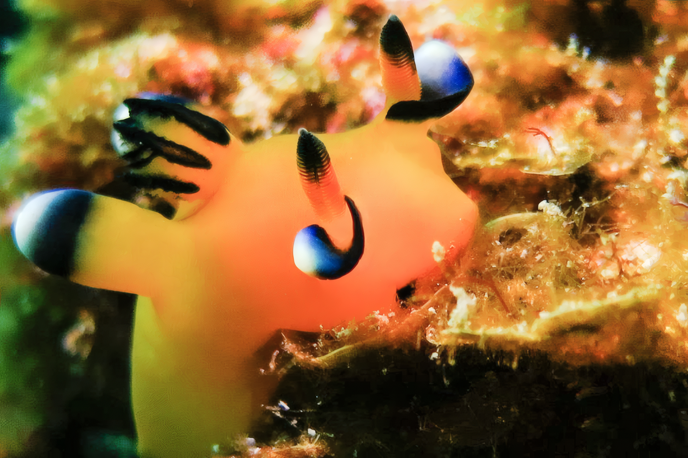
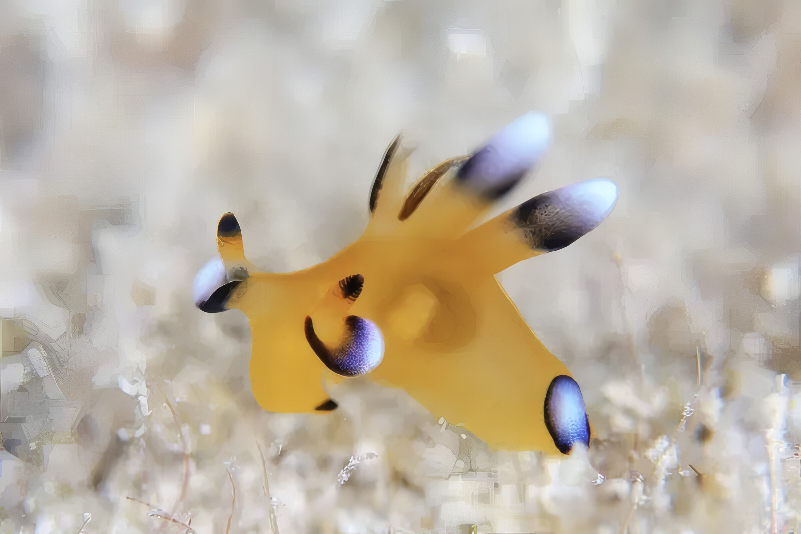

トップ




ピカチュウ……
とてもカワイイ
可愛すぎてとてもツライ……
逢いたい……
動いているよ
どこに行けば逢える？
トキワの森！！
............じゃなくて
串本の海にいるよ！！
串本ってどこ！？
ここ！！
この串本のこのあたりで逢えるよ！！

クリックまたはタップすると拡大表示されます
え！？う、海の中！？
どうすれば逢える？

ピカチュウは海の中に住んでるんだよ
ピカチュウの飼育はむつかしいらしくて飼育している水族館はあまりないんだって
だから逢おうと思ったら海に潜らないとだめなんだ
しかもピカチュウは少し深いところにいる
だからスクーバダイビングで潜るんだ
串本では水深 10m から 18m くらいの間で見つかっているよ
ダイビング用のボートに乗って、住崎、グラスワールド、備前なんてところで潜ると逢うことができるよ
港からボートで 10 分もかからないから船酔いも安心
でもね、ピカチュウは自然のなかで生きているから、いつも逢えるとはかぎらないんだ
もしかして嵐でながされてしまっているかもしれない
もしかしてほかの生き物に食べられてしまっているかもしれない
だから、もしもピカチュウに逢うことができたら、その刻はとても大事な刻なのかもしれないね
次は逢えないかもしれないから、逢ったピカチュウをとてもたいせつにしてあげてね
住崎、グラスワールド、備前ってどこ？
潮岬のすぐ西側だよ

クリックまたはタップで別タブに開きます。
住崎、グラスワールド、備前のことをもう少しくわしく知りたいな
どこのダイビングポイントでもマップの黄色い "根" っていう、岩とサンゴのかたまりでピカチュウを探すことになるよ。
住崎

いろんな魚や生物が住んでいるとてもすてきなところ
イサキの大群なんかもいたりするよ
最近ちょっと水深が深めの -25m くらいにあるスリバチカイメンにサクラコシオリエビが見つかってアイドル状態になっていたよ
グラスワールド

ここもいろんな魚や生物が住んでいるとてもすてきなところ
もしかするとピカチュウよりもアオウミガメで有名かも
備前

ここもいろんな魚や生物が住んでいるとてもすてきなところ
冬のウミウシ探しで多くのダイバーが入るところ
ピカチュウもウミウシだよ！！
砂地にはハゼの仲間がいっぱい！！
レッツ備前！！